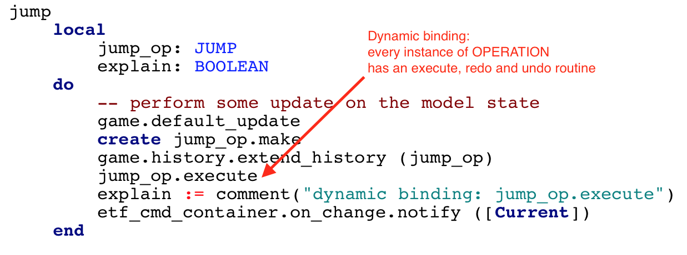
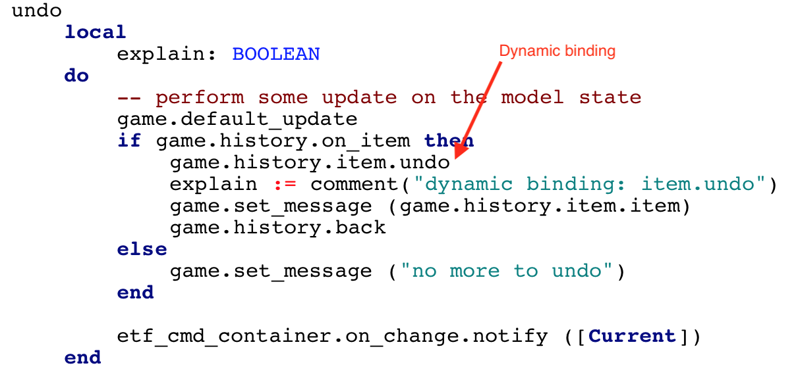
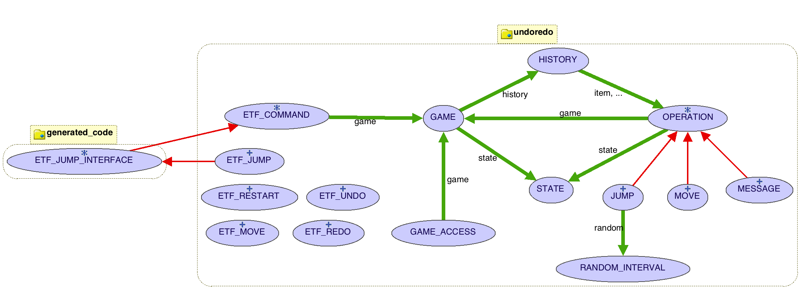

At the command line, you can check out this example as follows:
> svn checkout http://svn.eecs.yorku.ca/repos/sel-open/misc/tutorial/undoRedo-DesignPattern
You can explore the code here.
This Design Pattern is based on OOSC2, Chapter 21, and illustrates
the use of polymorphism, static typing and dynamic bining in
object-oriented design.
| -- A 2-dimensional board with a
single movable piece -- that can move left, right, up and down -- as well as take a random jump. -- Supported by an undo-redo design pattern -- as in OOSC2 Chapter 21 system undoredo type DIRECTION = {left,right,up,down} restart move(a_direction: DIRECTION) jump undo redo |
The user inputs (inheriting from ETF_COMMAND) have corresponding operations MOVE, JUMP and MESSAGE (inheriting from deferred class OPERATION) that can be executed, undone or redone.
In routine {ETF_JUMP}jump, we see polymorphism and dynamic binding at work as follows:

In routine {ETF_UNDO}undo we see polymorphism and dynamic binding at work as follows:
A BON diagram for the business logic is
shown below:
